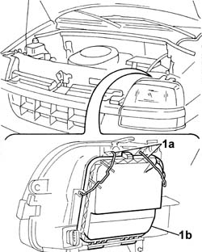
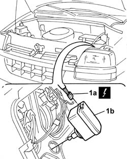
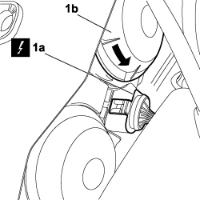
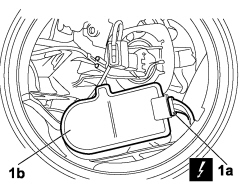

5540C24 motor (one) for l/h or r/h headlamp/light cluster alignment correction - r+r
- Path
- Procedures > 55 ELECTRICAL EQUIPMENT > 5540 EXTERIOR LIGHTING > 5540C headlamp/light cluster alignment correction devices > 5540C24 motor (one) for l/h or r/h headlamp/light cluster alignment correction - r+r
- Kind
- repair procedure (removal / refitting; the operation number is the code)
- Applies to
- all engines; all production periods
- Interactive page
- https://sloeber94.github.io/elrnDB-fDbl/en/#/2584944
Applies to: engines: 1.2 8v, 1.6 16v, 1.3 JTD 16V, 1.9 JTD 8V, 1.9 DIESEL; all production periods
 Removing
Removing
 Refitting
RefittingDisconnect the battery negative terminal.
1. Release the retaining springs (1a) and remove the protective cover (1b).

Applies to: engines: 1.2 8v, 1.6 16v, 1.3 JTD 16V, 1.9 JTD 8V, 1.9 DIESEL; all production periods
1. Disconnect the electrical connector (1a) and remove the motor (1b), rotating it by 90 degrees.
 | Name | Connector |
|---|---|---|
1a | Left headlamp |
| Name | Connector |
|---|---|---|
1a | Right headlamp |

Applies to: engines: 1.2 8v, 1.6 16v, 1.3 JTD 16V, 1.9 JTD 8V, 1.9 DIESEL; all production periods
Refitting
RemovingFit the motor and connect the electrical connector.
| Name | Connector |
|---|---|---|
- | Left headlamp |
| Name | Connector |
|---|---|---|
- | Right headlamp |
Close the protective cover on the front lights cluster and secure it with the retaining clips.
Connect the battery's negative terminal and check that the headlamp adjustment motor is working properly.
Applies to: engines: 1.4 8v, 1.6 16v, 1.3 JTD 16V, 1.9 JTD 8V; production: da 12/03; only with equipment: MY 2005
Removing
Refitting- Turn the ignition key to the OFF position.
- Lift the bonnet
- Disconnect the negative battery terminal.
Description | Connector | |
|---|---|---|
BATTERY |
1. Disconnect electrical connection (1a) from the front light cluster, unscrew protective cover (1b) anticlockwise and remove.
Description | Connector | |
|---|---|---|
1 | LEFT HEADLAMP |
Description | Connector | |
|---|---|---|
1 | RIGHT HEADLAMP |

Applies to: engines: 1.4 8v, 1.6 16v, 1.3 JTD 16V, 1.9 JTD 8V; production: da 12/03; only with equipment: MY 2005
1. Disconnect electrical connection (1a), turn headlamp alignment correction motor (1b) and remove from the vehicle.

Applies to: engines: 1.4 8v, 1.6 16v, 1.3 JTD 16V, 1.9 JTD 8V; production: da 12/03; only with equipment: MY 2005
Refitting
Removing- Check the condition of headlamp alignment correction motor; replace if necessary.
- Connect the electrical connection to the headlamp alignment correction motor.
- Position the headlamp alignment corection motor in its seat and turn as necessary.
- Position the protective cover rotating it in a clockwise direction.
- Connect the electrical connection to the front light cluster.
Description | Connector | |
|---|---|---|
1 | LEFT HEADLAMP |
Description | Connector | |
|---|---|---|
1 | RIGHT HEADLAMP |
- Connect the electrical connection to the front light cluster.
Description | Connector | |
|---|---|---|
BATTERY |
- Connect the negative battery terminal.